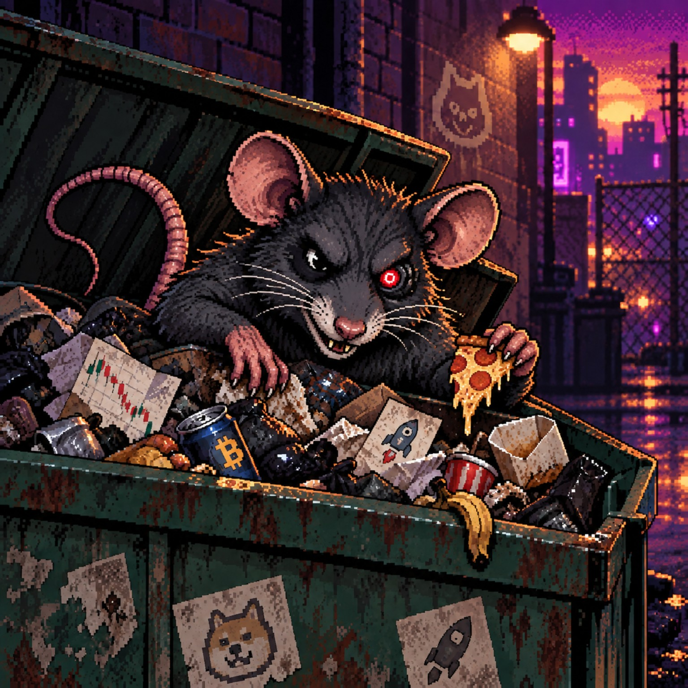
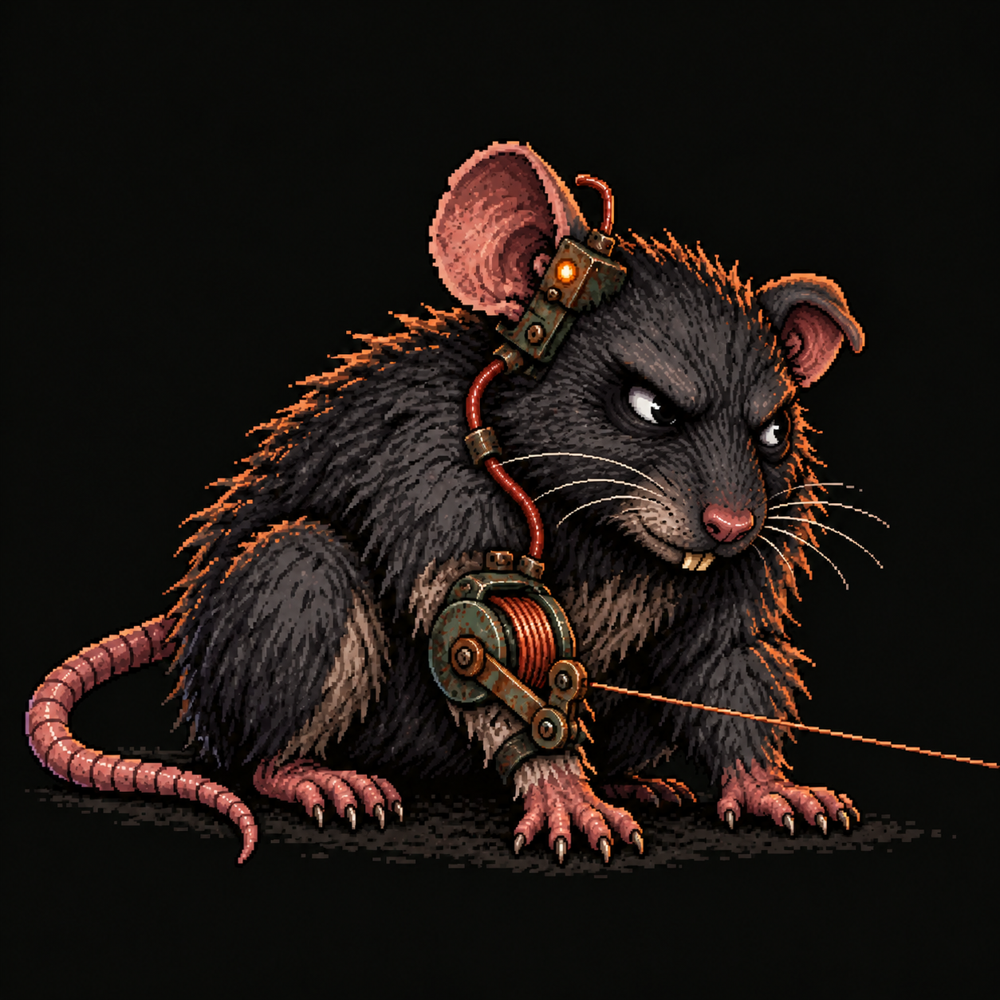
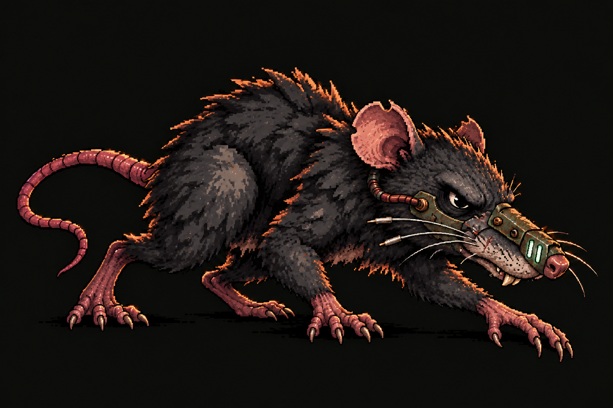

RAT ZERO
SCOUT · UNVERIFIEDCurrent capability is unverified.
DIG WITH RAT ZERO →Discover a Pons launch. Open its Case. Check the receipts. Persistent Rat employment is future product direction.
DISCOVER → OPEN CASE → CHECK RECEIPTSToday’s actionable journey.

Fresh Pons launches. Open one to see what the Rat found.
Loading Pons launches…
Loading Pons launches…
Current capability is unverified.
DIG WITH RAT ZERO →
Current capability is unverified. Persistent Rat employment is not available.
SEE THE FUTURE PLAN →
Research evidence is unverified. Later-launch usefulness is still being proven.
SEE THE RESEARCH →Product direction. Persistent employment and jobs are not available today.
Open a launch. See what BINRAT knows.
Future: choose a bounded job when durable admission exists.
Future: leave a Rat on a supported subject.
Future: return to supported findings and retained receipts.
Today: DISCOVER → OPEN CASE → CHECK RECEIPTS.
SNIFF → REMEMBER → WATCH → HUNT → ORGANIZE → AUTONOMOUS RAT
On-demand Rat Zero discovery and supported Case evidence. Open a launch. Inspect the receipts.
START DIGGING →Bounded persistent jobs and workforce capacity. Leave workers on supported subjects and return to findings.
No public Working Rat entitlement or staking action. PonsVault Staking may exist at token launch without Working Rat entitlement.
STAKE BUYS LABOR. NOT TRUTH. Future labor follows the same evidence rules.
Open BINRAT in Telegram for the current evidence journey. Persistent Tripwire jobs remain future product direction.
THE DUMPSTER
Coverage describes the record, never the token. Open a bag to inspect the evidence.